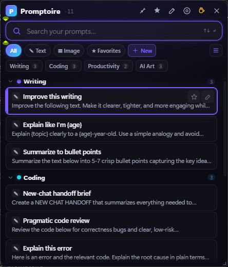
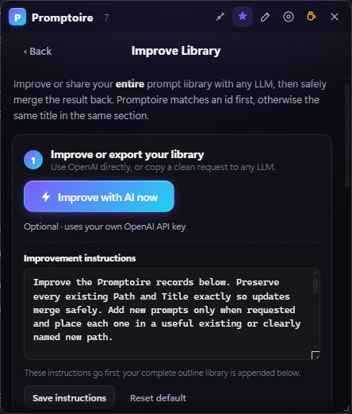
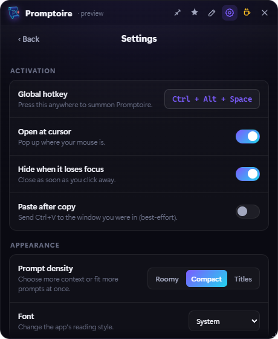

Summon
Press your hotkey anywhere. Promptoire opens near the cursor without pulling you into another heavyweight workspace.
Organize text and image prompts in a fast, quiet launcher. Find one, click once to copy, and get straight back to work.

Press your hotkey anywhere. Promptoire opens near the cursor without pulling you into another heavyweight workspace.
Search, browse nested sections, filter by type, or use favorites. Click a prompt and it is immediately on your clipboard.
Pin the launcher open or let it vanish after copying. Adjustable density and resizing keep it as compact as you want.

Copy a clean, human-readable outline to any LLM, ask it to rewrite or expand your prompts, then paste the result back.
Coding
Debugging
Bug sweep: Review this code for edge cases...
Path: AI Art > Portraits
Title: Cinematic portraitPromptoire is not a chat client, team platform, or subscription service. It is the fastest path between you and the prompt you need.
Use a chord, a function key, or tilde. Open at your cursor from almost anywhere.
Roomy previews, compact rows, or titles only—plus a fully resizable window.
Keep copyable image flags directly in the prompt, with optional model metadata folded out of the way.
Reorder sections and move prompts between categories and nested subcategories.
Fill values such as {topic}, {tone}, or {code} immediately before copying.
Plain local files, atomic saves, timestamped backups, and no installer required.
Choose how Promptoire appears, behaves after a copy, starts with Windows, and fits alongside the rest of your workflow.

Promptoire has no account, telemetry, analytics, advertising, or cloud database. Your real library and settings stay beside the app. Data leaves only when you explicitly copy it or invoke the optional OpenAI action.
Download the portable Windows ZIP, extract it somewhere permanent, and run Promptoire.exe.
Early unsigned releases may show a Windows SmartScreen warning. Verify the published SHA-256 checksum and source before choosing “Run anyway.” Why this happens.
Free, open source, local-first, and built to stay out of your way.